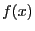
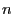

Next: Model.setParam() Up: Model Previous: Model.setObjective()
Set a piecewise-linear objective function for a variable.
The arguments to this method specify a list of points that define a
piecewise-linear objective function for a single variable.
Specifically, the  and
and  arguments give coordinates for the
vertices of the function.
arguments give coordinates for the
vertices of the function.
For example, suppose we want to define the function  shown below:
More formally, a set of  points
The  entries must appear in non-decreasing order. Two points can
have the same
entries must appear in non-decreasing order. Two points can
have the same  coordinate -- this can be useful for specifying a
discrete jump in the objective function.
coordinate -- this can be useful for specifying a
discrete jump in the objective function.
Note that a piecewise-linear objective can change the type of a model. Specifically, including a non-convex piecewise linear objective function in a continuous model will transform that model into a MIP. This can significantly increase the cost of solving the model.
Setting a piecewise-linear objective for a variable will set the
Obj attribute on that variable to 0.
Similarly, setting the Obj attribute will delete the
piecewise-linear objective on that variable.
Each variable can have its own piecewise-linear objective function. They must be specified individually, even if multiple variables share the same function.
Arguments:
var: A Var object that gives the variable whose objective function is being set.
x: The  values for the points that define the piecewise-linear function. Must be in non-decreasing order.
values for the points that define the piecewise-linear function. Must be in non-decreasing order.
y: The  values for the points that define the piecewise-linear function.
values for the points that define the piecewise-linear function.
Example usage:
model.setPWLObj(var, [1, 3, 5], [1, 2, 4])